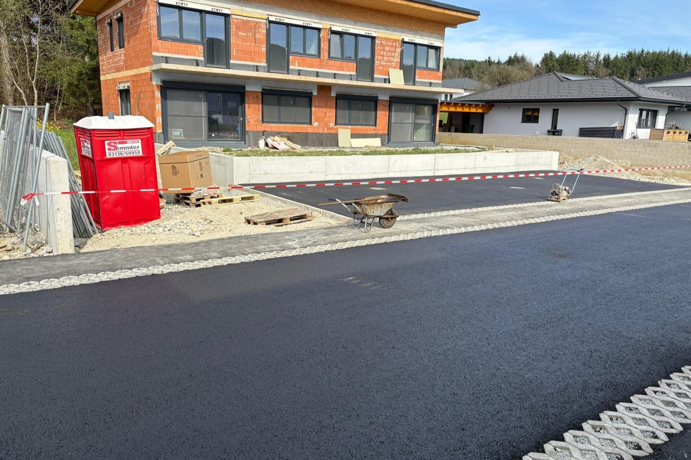
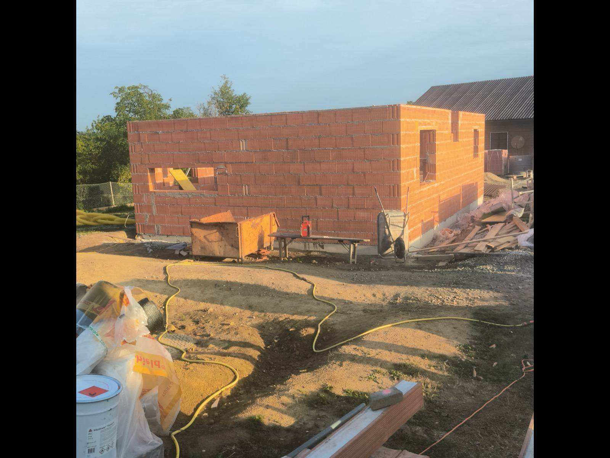

Storitev
Strehe v Mariboru
Od ostrešja do kritine – nova streha ali obnova obstoječe.

Ostrešje, kritina in kleparska dela
Izvedemo novo streho ali obnovo obstoječe – od lesene konstrukcije do kritine in obrob. Poskrbimo tudi za ustrezno izolacijo in odvodnjavanje. Strehe obnavljamo na starejših hišah v mestnem jedru in na novogradnjah v okolici Maribora.
- Lesena ostrešja in konstrukcije
- Kritine (opečna, betonska, pločevina)
- Kleparska dela – žlebovi in obrobe
- Toplotna izolacija strehe
- Popravila in menjava kritine
Galerija
Ostrešja, kritine in kleparska dela.



Kako izvedemo
Potek izvedbe strehe v Mariboru
Novo streho ali obnovo kritine v Mariboru izvedemo celovito – od ostrešja do kleparskih del.
- Ogled ostrešja in ocena stanja konstrukcije
- Izdelava ali sanacija lesenega ostrešja
- Paroprepustne folije, letve in kontraletve
- Polaganje kritine (opečna, betonska ali pločevinasta)
- Kleparska dela: žlebovi, obrobe in odvodnjavanje
Koliko stane streha ali menjava kritine v Mariboru?
Cena strehe je odvisna od površine in naklona, vrste izbrane kritine, stanja obstoječega ostrešja ter obsega kleparskih del in izolacije. Po ogledu v Mariboru ali okolici pripravimo oceno za novo streho ali za obnovo obstoječe kritine.
Povprašajte za ponudboPogosta vprašanja
Pogosta vprašanja
Ali zamenjate samo kritino ali celotno streho?
Oboje. Izvedemo novo ostrešje in kritino ali le zamenjavo dotrajane kritine in kleparskih elementov na obstoječi strehi.
Poskrbite tudi za kleparska dela?
Da. Uredimo žlebove, obrobe in odvodnjavanje, da streha dolgoročno ščiti objekt.
Koliko stane streha v Mariboru?
Cena strehe je odvisna od površine, tipa kritine in stanja ostrešja. Po brezplačnem ogledu v Mariboru ali okolici (Ruše, Miklavž, Hoče, Rače, Pesnica, Lenart) pripravimo pošteno oceno del brez obveznosti.
Povezane storitve
Nova streha ali obnova?
Pokličite ali pišite in dogovorimo se za ogled ter oceno del.